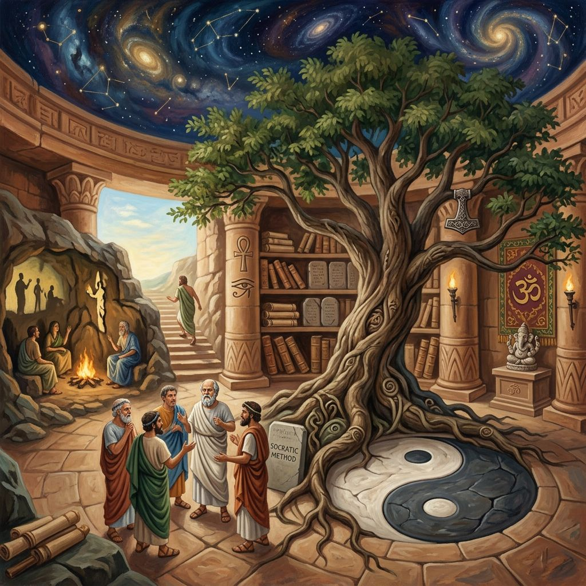

Section Ⅰ · The Mirror Room리더를 가두는 거울 방
인지적 거품 —
완벽한 데이터가 만드는 함정
인류 역사상 '정답'이 이토록 저렴하고 흔해진 시대는 없었다. 그러나 역설적으로, 현대의 리더들은 그 정답의 홍수 속에서 길을 잃고 있다.
MIT 리더십 센터의 전임 디렉터 Hal Gregersen은 이를 리더십의 실존적 위기로 진단한다. 그가 지적하는 현대 리더들의 가장 치명적인 약점은 '인지적 거품(Cognitive Bubble)'이다.
"조직의 직위가 상승할수록 리더는 자신을 기쁘게 하는 보고서, 정제된 데이터 대시보드, 그리고 예스맨들에게 둘러싸이게 된다."
— Hal Gregersen, MIT Sloan · McKinsey Quarterly 2019
데이터가 완벽해 보일수록 리더는 자신이 모든 것을 통제하고 있다는 착각에 빠진다. 정작 시장의 거대한 균열이나 보이지 않는 위기(Mystery)는 감지하지 못한 채. 위대한 질문은 바로 이 견고하고 안락한 인지적 거품을 깨뜨리는 유일한 망치이다.
Section Ⅱ · Catalytic Questions촉매적 질문의 조건
모든 질문이
같은 가치를 갖지 않는다
Gregersen은 단호히 말한다 — 전략적 현실을 뒤흔들 수 있는 '촉매적 질문(Catalytic Question)'은 세 가지 조건을 충족해야 한다.
Three Conditions
촉매적 질문의 3가지 조건
01
프레임을 재구성하는가?
Reframing
현재의 문제 정의 자체에 의문을 제기하고, 완전히 다른 시각에서 문제를 바라보게 만드는 질문. "우리가 틀린 문제를 풀고 있는 건 아닐까?"라는 불편한 도전.
02
전제를 깨뜨리는가?
Assumption-breaking
조직이 오랫동안 자명하다고 믿어온 전제 자체에 도전한다. "우리가 반드시 그래야 한다고 믿는 이유는 무엇인가?" — 수십 년간 굳어진 비즈니스 모델을 해체한다.
03
행동을 촉발하는가?
Action-generating
단순한 지적 호기심에 머무르지 않고, 즉각적인 탐색과 실험 행동으로 이어지는 에너지를 갖는다. 좋은 질문은 답을 기다리는 것이 아니라 스스로 답을 향해 걸어가게 만든다.
Section Ⅲ · Question Burst퀘스천 버스트
4분의 혁명 —
회의를 멈추고 질문하라
Gregersen이 제시하는 가장 강력한 실천적 해법은 '퀘스천 버스트(Question Burst)' 프레임워크다. 조직이 해결할 수 없는 난제에 빠졌을 때, 리더는 해결책을 강구하는 회의를 멈추고 오직 '질문만'을 생산하는 세션을 소집한다.
Duration
4min
오직 질문만 — 설명도, 변명도, 정답도 없이. 문제에 대한 질문을 연속해서 쏟아낸다.
Reframing Rate
80%
4분 후 참가자 80% 이상이 가짜 프레임에서 벗어나 문제를 완전히 재정의하게 된다.
Rule 01
No
Answers
비판의 절대 금지 — 타인의 질문을 평가하거나 분석하지 않는다. 어떤 질문도 나쁜 질문이 없다.
Rule 02
No
Critic
올바른 질문이 도출되는 순간, 해결책은 자연스럽게 모습을 드러낸다.

Fig. 03
질문이 태어나는 공간 — 침묵 속에서 가장 날카로운 질문이 나온다
Section Ⅳ · CEO Strategic QuestionsCEO를 위한 4대 전략 질문
인텔리전스 아키텍트 —
AI 시대 CEO의 의무
에이전틱 AI 시대의 CEO는 기술 도입 매뉴얼이 아닌, 조직의 운영 모델 자체를 재조정하는 '인텔리전스 아키텍트'가 되어야 한다. 그가 반드시 답해야 할 4가지 전략적 질문이 있다.
4 Strategic Questions for CEO
The Intelligence Architect
AI 시대 CEO가 던져야 할 4대 질문
Q 01
Autonomy
자율성의 범위
→
Execution Authority
집행 권한의 경계
"우리 AI 에이전트에게 어디까지 집행 권한을 위임할 것인가?" AI는 이제 예산을 집행하고 가격 변동에 선제 대응하는 실행자로 진화했다. CEO는 자산 규모·브랜드 목소리·법적 책임 기준으로 경계를 명문화해야 한다.
Q 02
Shadow AI
파편화된 도입
→
Intelligence OS
중앙 지능 운영체제
"파편화된 AI 도입을 어떻게 중앙 집중형 지능 OS로 통합할 것인가?" 부서별 섀도우 AI는 데이터 사일로를 낳는다. CEO는 CTO에게 "현재 구동 중인 에이전트 워크플로우가 정확히 몇 개인가"를 심문해야 한다.
Q 03
Short-term ROI
단기 비용 절감
→
Compound Reinvest
복리형 재투자
"AI 가치 실현의 지표를 단기 인건비 절감에 둘 것인가, 복리형 재투자에 둘 것인가?" AI가 흡수한 루틴 업무의 생산성 잉여를 구조조정이 아닌 업스킬링과 인프라 고도화에 재투자하는 자본 배치 아키텍처가 핵심이다.
Q 04
Lazy Thinking
인지적 태만
→
Critical Friction
비판적 마찰
"AI의 완벽함 속에서 인간의 비판적 사고력과 법적 책임을 어떻게 보존할 것인가?" 시스템이 매끄러울수록 구성원은 AI 판단을 무비판적으로 수용하게 된다. 의도적으로 결재 단계에 인간의 비판적 마찰을 심어두는 것이 리더의 의무다.
Section Ⅴ · Human Potential · Itai Talmi인간 잠재력의 재정의
기계가 모든 것을 잘 할 때,
인간은 무엇으로 승부하는가
Itai Talmi는 경고한다 — "모두가 AI의 역량에 집착할 때, 정작 인류는 더 거대한 혁명인 '인간 잠재력의 재정의'를 놓치고 있다." 지능의 외주화 시대를 살아갈 리더들이 던져야 할 5가지 도발적 질문이다.
5 Critical Questions · Itai Talmi
인간 잠재력에 관한 5가지 핵심 질문
Q1
우리가 '상상력'과 '창의성'을 혼동함으로써 잃어버린 대가는?
AI가 기존 데이터를 조합해 창의적 결과물을 만들 때, 인간이 보호해야 할 것은 아직 존재하지 않는 미래를 그려내는 원초적 상상력이다.
Q2
기술의 한계비용이 제로(0)가 될 때, 인간 능력의 가치는 어떻게 재정립되는가?
법률·코딩·재무 분석 비용이 제로에 수렴하는 시대. 인간의 진정한 경쟁 우위는 질문의 깊이와 맥락적 리더십으로 이동한다.
Q3
주니어 인재들의 직무가 사라진 진공 상태에서, 어떻게 미래의 리더를 육성할 것인가?
기초 리서치·서류 초안 등 주니어 직무를 AI에 위임하면서 리더십 파이프라인이 조용히 단절되고 있다.
Q4
AI가 모든 것을 더 잘 할 때, 구성원의 심리적 안전감을 어떻게 보호할 것인가?
기계와의 경쟁에서 패배를 감지하는 순간 심리적 안전감은 무너진다. 이는 조직 전체의 비판적 사고력을 마비시키고 AI에 대한 맹목적 과신(Overreliance)을 낳는다.
Q5
인류의 진화적 가치보다 시스템의 ROI를 우선시할 때, 우리는 어떤 문명을 마주하게 되는가?
효율성 극대화라는 도구주의에 눈이 멀어 인간의 인지적 능력과 철학적 사유를 퇴화시킨다면 — 기술은 발달했으나 인간성은 증발한 디스토피아가 기다린다.
Synthesis · Vol. 03
질문의 주권을
선언하라
세 사상가 — Gregersen, Talmi, Karakas — 가 서로 다른 각도에서 같은 진실을 가리키고 있다. 기계가 모든 정답을 쏟아내는 시대일수록, 인간 리더에게 요구되는 절대적 책무는 '아직 아무도 던지지 않은 질문'을 발굴하는 일이다.
위대한 질문을 던지는 능력은 타고난 천재성이 아니다. 리더 스스로 '자신이 틀릴 수 있는 불편한 환경'에 뛰어들고 매일 자신의 편향을 의심하는 강력한 자기 절제의 결과물이다. 기술의 정점에서 인간을 구원하는 것은 결국 질문하는 능력이다.
Fahri Karakas의 말처럼, "당신이 던지는 질문의 크기가 곧 당신이 만들어낼 혁명의 크기"다. 가장 큰 질문을 가진 리더가, 가장 큰 변화를 만든다.
Leadership Insight · Vol. 03 · 2026
한국 피터드러커소사이어티